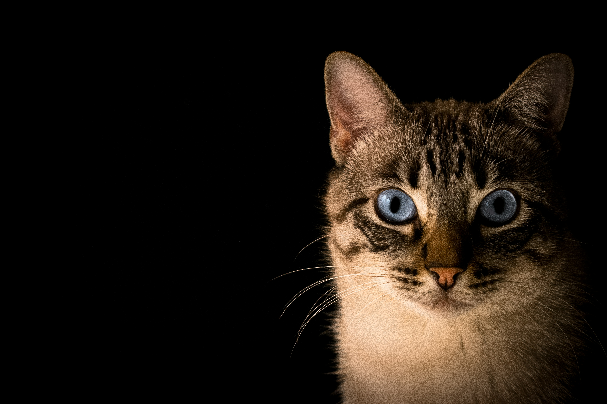
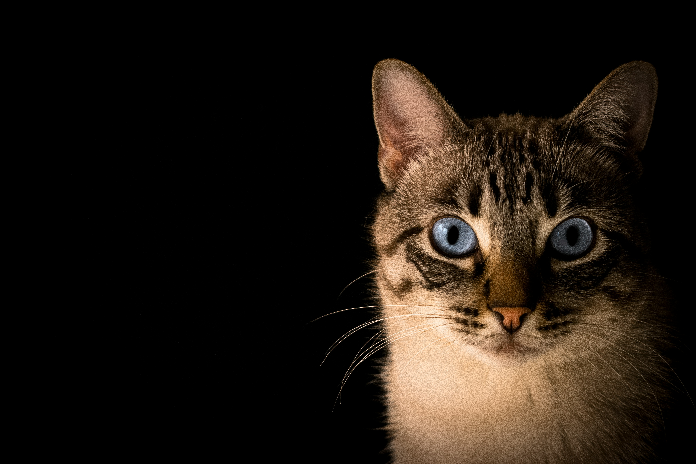
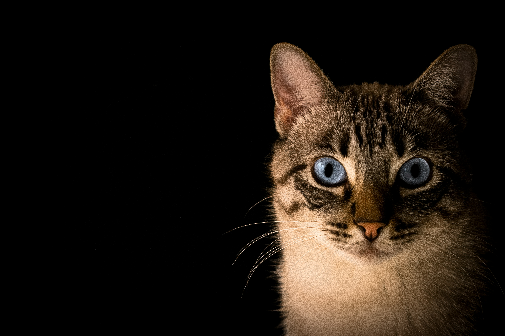

Kucing adalah hewan peliharaan yang menggemaskan, mandiri, dan penuh kasih sayang. Mereka dikenal karena kelucuannya, kebersihannya, dan sikap manja kepada pemiliknya.

Tonton video lucu kucing berikut:
Galeri Kucing
 



Kucing adalah hewan peliharaan yang menggemaskan, mandiri, dan penuh kasih sayang. Mereka dikenal karena kelucuannya, kebersihannya, dan sikap manja kepada pemiliknya.
Tonton video lucu kucing berikut:
